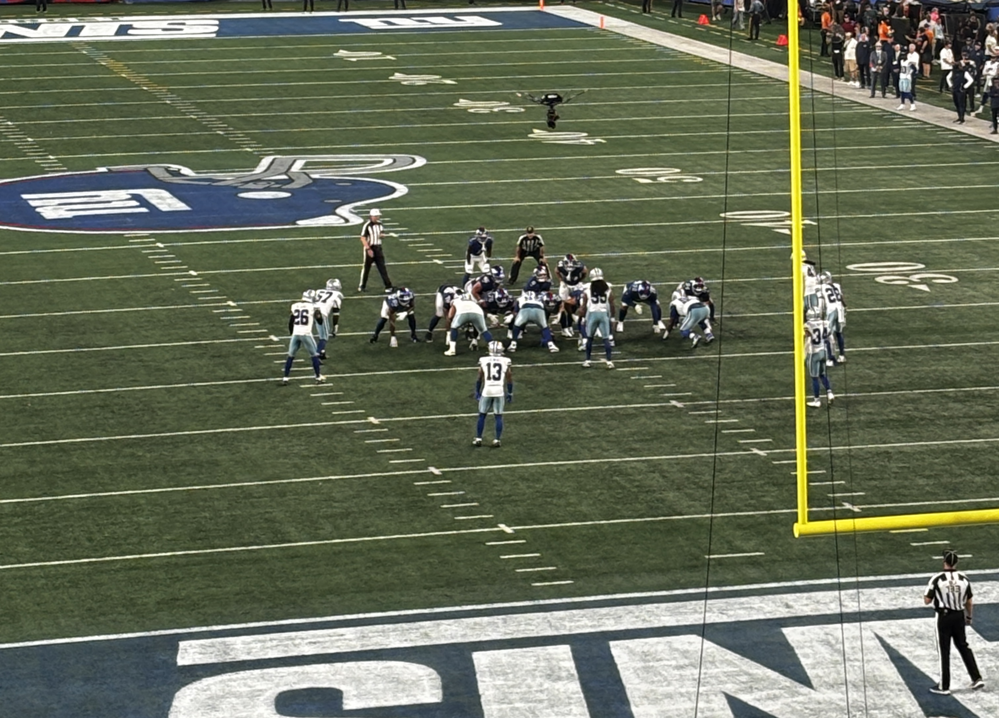

Dallas Cowboys
20
FINAL
New York Giants
28
Win
Sunday, September 13, 2026 · 8:20 PM ET · MetLife Stadium, East Rutherford, NJ ·
Record: 1-0
Game Recap
The Giants began the John Harbaugh era with a primetime win over their biggest division rival. Second-year quarterback Jaxson Dart completed 23 of 29 passes for 230 yards, three touchdowns, a passer rating of 134.2, plus 54 yards on the ground. The Giants racked up 165 yards rushing, allowing them to possess the ball for nearly 37 minutes.

Score by Quarter
| Team | Q1 | Q2 | Q3 | Q4 | Final |
|---|---|---|---|---|---|
| Cowboys | 0 | 7 | 7 | 6 | 20 |
| Giants | 7 | 7 | 7 | 7 | 28 |
Giants Stat Leaders
Passing
Jaxson Dart
230 yards, 3 TD
Rushing
Cam Skattebo
81 yards, 1 TD
Receiving
Isaiah Likely
78 yards, 2 TD
Team Stats
| Stat | Giants | Dallas Cowboys |
|---|---|---|
| Total yards | 394 | 244 |
| Passing yards (net) | 229 | 175 |
| Rushing yards | 165 | 69 |
| Completions / attempts | 23/29 | 22/34 |
| Passing TD / INT | 3 / 0 | 2 / 1 |
| First downs | 29 | 21 |
| Turnovers | 1 | 1 |
| Sacks allowed | 2 | 0 |
| Penalties - yards | 10 - 114 | 9 - 90 |
| Time of possession | 36:40 | 23:20 |
Scoring Summary
- Q1 - Cam Skattebo 3-yard TD run (NYG 7-0)
- Q2 - CeeDee Lamb 1-yard TD catch from Dak Prescott (7-7)
- Q2 - Isaiah Likely 15-yard TD catch from Jaxson Dart (NYG 14-7)
- Q3 - Isaiah Likely 2-yard TD catch from Jaxson Dart (NYG 21-7)
- Q3 - Javonte Williams 1-yard TD run (NYG 21-14)
- Q4 - Devin Singletary 9-yard TD catch from Jaxson Dart (NYG 28-14)
- Q4 - Javonte Williams 17-yard TD catch from Dak Prescott, extra point missed (NYG 28-20)
Watch the Highlights
Catch the best plays from this game on YouTube, or browse the official team video page.
Watch on YouTube Giants.com Video